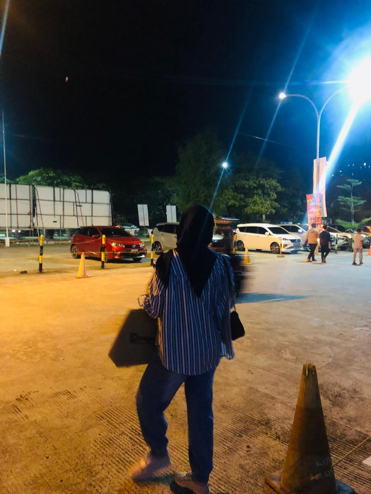

Biodata dilsky

Nama : Nur Fadillah
Tempat, tanggal lahir : Pinrang, 30 November 2004
Alamat : Jln. Abd dg sirua lr.5 No.16
Instagram : @fadillanstura._
Asal sekolah :
- SD IT Wihdatul Ummah
- SMP Muhammadiyah 1 Makassar
- SMAN 11 Pinrang
Hobi : Nonton film, drama, series
Favorit Series :
- The Umberella Acedemy
- Money Heist
- Stanger Things
- Our Beloved Summer
- A Killer Paradox
Favorite Film
- Parasite
- Yes Day
- Sejuta Sayang Untuknya
- ali & ratu ratu queens
Makanan Favorit